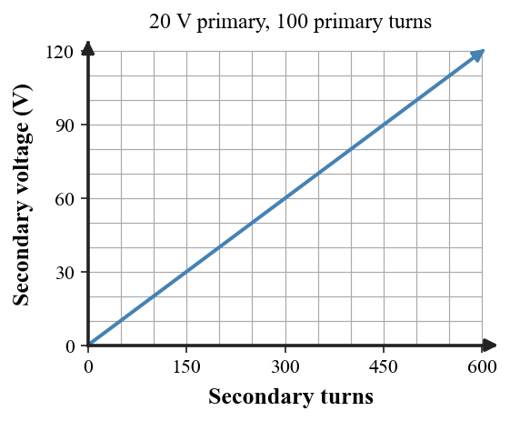

Unit 8.5 · Activity · Modern Electromagnetic SystemsProblem 1
Problem 1
DOK 1
1. What distinguishes a step-up transformer from a step-down transformer?
Unit 8.5 · Activity · Modern Electromagnetic SystemsSolution 1
Solution 1
DOK 1
1. What distinguishes a step-up transformer from a step-down transformer?
Answer: A step-up transformer has $N_s>N_p$ and raises secondary voltage; a step-down transformer has $N_s
Unit 8.5 · Activity · Modern Electromagnetic SystemsProblem 2
Problem 2
DOK 1
2. Name the coil in which transformer output voltage is induced.
Unit 8.5 · Activity · Modern Electromagnetic SystemsSolution 2
Solution 2
DOK 1
2. Name the coil in which transformer output voltage is induced.
Answer: The secondary coil is the output winding in which transformer voltage is induced.
Unit 8.5 · Activity · Modern Electromagnetic SystemsProblem 3
Problem 3
DOK 1
3. Write the transformer voltage-turns relationship allowed in this unit.
Unit 8.5 · Activity · Modern Electromagnetic SystemsSolution 3
Solution 3
DOK 1
3. Write the transformer voltage-turns relationship allowed in this unit.
Answer: $\dfrac{V_s}{V_p}=\dfrac{N_s}{N_p}$.
Unit 8.5 · Activity · Modern Electromagnetic SystemsProblem 4
Problem 4
DOK 1
4. Which device mainly converts mechanical energy into electrical energy: motor or generator?
Unit 8.5 · Activity · Modern Electromagnetic SystemsSolution 4
Solution 4
DOK 1
4. Which device mainly converts mechanical energy into electrical energy: motor or generator?
Answer: A generator mainly converts mechanical energy into electrical energy. A motor mainly converts electrical energy into mechanical energy.
Unit 8.5 · Activity · Modern Electromagnetic SystemsProblem 5
Problem 5
DOK 1
5. What does $P=IV$ calculate?
Unit 8.5 · Activity · Modern Electromagnetic SystemsSolution 5
Solution 5
DOK 1
5. What does $P=IV$ calculate?
Answer: $P=IV$ calculates electric power from current and voltage.
Unit 8.5 · Activity · Modern Electromagnetic SystemsProblem 6
Problem 6
DOK 2
6. Use the generated transformer graph. For a 20 V primary with 100 primary turns, estimate the secondary voltage at 400 secondary turns and explain the trend.

Unit 8.5 · Activity · Modern Electromagnetic SystemsSolution 6
Solution 6
DOK 2
6. Use the generated transformer graph. For a 20 V primary with 100 primary turns, estimate the secondary voltage at 400 secondary turns and explain the trend.
Work: $V_s/V_p=N_s/N_p=400/100=4$, so $V_s=4(20\text{ V})=80\text{ V}$. Trend: With fixed primary values, secondary voltage increases in direct proportion to secondary turns.
Unit 8.5 · Activity · Modern Electromagnetic SystemsProblem 7
Problem 7
DOK 2
7. A transformer has 600 primary turns, 150 secondary turns, and 240 V on the primary. Calculate the secondary voltage and classify the device.
Unit 8.5 · Activity · Modern Electromagnetic SystemsSolution 7
Solution 7
DOK 2
7. A transformer has 600 primary turns, 150 secondary turns, and 240 V on the primary. Calculate the secondary voltage and classify the device.
Work: $V_s=240(150/600)=60\text{ V}$. Since $N_sAnswer: $60\text{ V}$, step-down.
Unit 8.5 · Activity · Modern Electromagnetic SystemsProblem 8
Problem 8
DOK 2
8. An ideal transformer has 180 W input and 180 W output. If its secondary voltage is 60 V, calculate the secondary current.
Unit 8.5 · Activity · Modern Electromagnetic SystemsSolution 8
Solution 8
DOK 2
8. An ideal transformer has 180 W input and 180 W output. If its secondary voltage is 60 V, calculate the secondary current.
Unit 8.5 · Activity · Modern Electromagnetic SystemsProblem 9
Problem 9
DOK 2
9. A microphone converts motion of a diaphragm into an electrical signal. Explain why it can be viewed as the reverse-direction partner of a speaker.
Unit 8.5 · Activity · Modern Electromagnetic SystemsSolution 9
Solution 9
DOK 2
9. A microphone converts motion of a diaphragm into an electrical signal. Explain why it can be viewed as the reverse-direction partner of a speaker.
Answer: A microphone converts mechanical diaphragm motion/sound into an electrical signal, while a speaker uses an electrical signal and magnetic force to create mechanical cone motion/sound. The energy/signal conversion directions are opposite.
Unit 8.5 · Activity · Modern Electromagnetic SystemsProblem 10
Problem 10
DOK 2
10. A maglev vehicle reduces contact with a track. Explain why reduced contact friction does not imply zero energy input to the complete system.
Unit 8.5 · Activity · Modern Electromagnetic SystemsSolution 10
Solution 10
DOK 2
10. A maglev vehicle reduces contact with a track. Explain why reduced contact friction does not imply zero energy input to the complete system.
Answer: Reduced wheel-track contact lowers one loss mechanism, but propulsion, magnetic-field control, electronics/cooling, and air resistance still require energy input.
Unit 8.5 · Activity · Modern Electromagnetic SystemsProblem 11
Problem 11
DOK 3
11. A maglev proposal says levitation eliminates all energy costs because there is no wheel-track contact. Evaluate the claim using magnetic-force control, air resistance, and system energy input.
Unit 8.5 · Activity · Modern Electromagnetic SystemsSolution 11
Solution 11
DOK 3
11. A maglev proposal says levitation eliminates all energy costs because there is no wheel-track contact. Evaluate the claim using magnetic-force control, air resistance, and system energy input.
Answer: The claim is incomplete. Levitation can reduce contact friction, but controlled magnetic forces, propulsion, air resistance, and system losses still require energy. Conservation of energy still applies.
Unit 8.5 · Activity · Modern Electromagnetic SystemsProblem 12
Problem 12
DOK 3
12. A device advertisement highlights powerful permanent magnets but gives no input-energy data. Explain why magnet strength alone cannot establish that the device is an energy source.
Unit 8.5 · Activity · Modern Electromagnetic SystemsSolution 12
Solution 12
DOK 3
12. A device advertisement highlights powerful permanent magnets but gives no input-energy data. Explain why magnet strength alone cannot establish that the device is an energy source.
Answer: Strong magnets can provide fields/forces but do not establish a continuing energy source. The claim must report and compare total input and output energy/power over time.
Unit 8.5 · Activity · Modern Electromagnetic SystemsProblem 13
Problem 13
DOK 1
13. The transformer coil connected to the source is the
armature only
output rotor
field pole
primary coil
secondary coil
Unit 8.5 · Activity · Modern Electromagnetic SystemsSolution 13
Solution 13
DOK 1
13. The transformer coil connected to the source is the
armature only
output rotor
field pole
primary coil
secondary coil
Answer: D — primary coil Work / rationale: The primary winding is connected to the input/source.
Unit 8.5 · Activity · Modern Electromagnetic SystemsProblem 14
Problem 14
DOK 1
14. The transformer coil where output voltage is induced is the
primary coil
motor shaft
battery coil
secondary coil
compass
Unit 8.5 · Activity · Modern Electromagnetic SystemsSolution 14
Solution 14
DOK 1
14. The transformer coil where output voltage is induced is the
primary coil
motor shaft
battery coil
secondary coil
compass
Answer: D — secondary coil Work / rationale: The secondary is the output winding where the changing magnetic field induces voltage.
Unit 8.5 · Activity · Modern Electromagnetic SystemsProblem 15
Problem 15
DOK 2
15. A transformer with 100 primary turns, 400 secondary turns, and 10 V primary voltage has secondary voltage
400 V
40 V
2.5 V
10 V
4 V
Unit 8.5 · Activity · Modern Electromagnetic SystemsSolution 15
Solution 15
DOK 2
15. A transformer with 100 primary turns, 400 secondary turns, and 10 V primary voltage has secondary voltage
400 V
40 V
2.5 V
10 V
4 V
Answer: B — 40 V Work / rationale: $V_s=10(400/100)=40\text{ V}$.
Unit 8.5 · Activity · Modern Electromagnetic SystemsProblem 16
Problem 16
DOK 1
16. When the secondary winding has fewer turns than the primary, the transformer is classified as
step-down
a motor
a generator
step-up
a permanent magnet
Unit 8.5 · Activity · Modern Electromagnetic SystemsSolution 16
Solution 16
DOK 1
16. When the secondary winding has fewer turns than the primary, the transformer is classified as
step-down
a motor
a generator
step-up
a permanent magnet
Answer: A — step-down Work / rationale: Fewer turns on the secondary gives a lower secondary voltage, so the transformer is step-down.
Unit 8.5 · Activity · Modern Electromagnetic SystemsProblem 17
Problem 17
DOK 2
17. If ideal power stays about constant while voltage is increased, current should
reverse permanently
remain unchanged in every case
increase by the same factor
become zero regardless of load
decrease
Unit 8.5 · Activity · Modern Electromagnetic SystemsSolution 17
Solution 17
DOK 2
17. If ideal power stays about constant while voltage is increased, current should
reverse permanently
remain unchanged in every case
increase by the same factor
become zero regardless of load
decrease
Answer: E — decrease Work / rationale: For approximately constant ideal power $P=IV$, higher voltage requires lower current.
Unit 8.5 · Activity · Modern Electromagnetic SystemsProblem 18
Problem 18
DOK 3
18. A microphone and speaker are related because
one can convert motion to an electrical signal while the other converts an electrical signal to motion/sound
both are step-up transformers
both create energy from magnets
both are only permanent magnets
neither uses magnetic interactions
Unit 8.5 · Activity · Modern Electromagnetic SystemsSolution 18
Solution 18
DOK 3
18. A microphone and speaker are related because
one can convert motion to an electrical signal while the other converts an electrical signal to motion/sound
both are step-up transformers
both create energy from magnets
both are only permanent magnets
neither uses magnetic interactions
Answer: A — one can convert motion to an electrical signal while the other converts an electrical signal to motion/sound Work / rationale: Speaker and microphone use related electromagnetic interactions in opposite conversion directions.
Unit 8.5 · Activity · Modern Electromagnetic SystemsProblem 19
Problem 19
DOK 3
19. Maglev can reduce wheel-track contact, but the system still requires energy because
field control, propulsion, cooling, and overcoming resistance require energy input
magnetic force automatically supplies unlimited power
magnets are consumed as fuel
levitation removes conservation of energy
air resistance disappears
Unit 8.5 · Activity · Modern Electromagnetic SystemsSolution 19
Solution 19
DOK 3
19. Maglev can reduce wheel-track contact, but the system still requires energy because
field control, propulsion, cooling, and overcoming resistance require energy input
magnetic force automatically supplies unlimited power
magnets are consumed as fuel
levitation removes conservation of energy
air resistance disappears
Answer: A — field control, propulsion, cooling, and overcoming resistance require energy input Work / rationale: Levitation reduces contact friction but field control, propulsion, cooling, and resistance still require input energy.
Unit 8.5 · Activity · Modern Electromagnetic SystemsProblem 20
Problem 20
DOK 1
20. Which quantity is electric power calculated from in this unit?
$v=d/t$
$W=Fd$ only
$F=BIL$
$P=IV$
$F=qvB$
Unit 8.5 · Activity · Modern Electromagnetic SystemsSolution 20
Solution 20
DOK 1
20. Which quantity is electric power calculated from in this unit?
$v=d/t$
$W=Fd$ only
$F=BIL$
$P=IV$
$F=qvB$
Answer: D — $P=IV$ Work / rationale: Electrical power is calculated by $P=IV$.